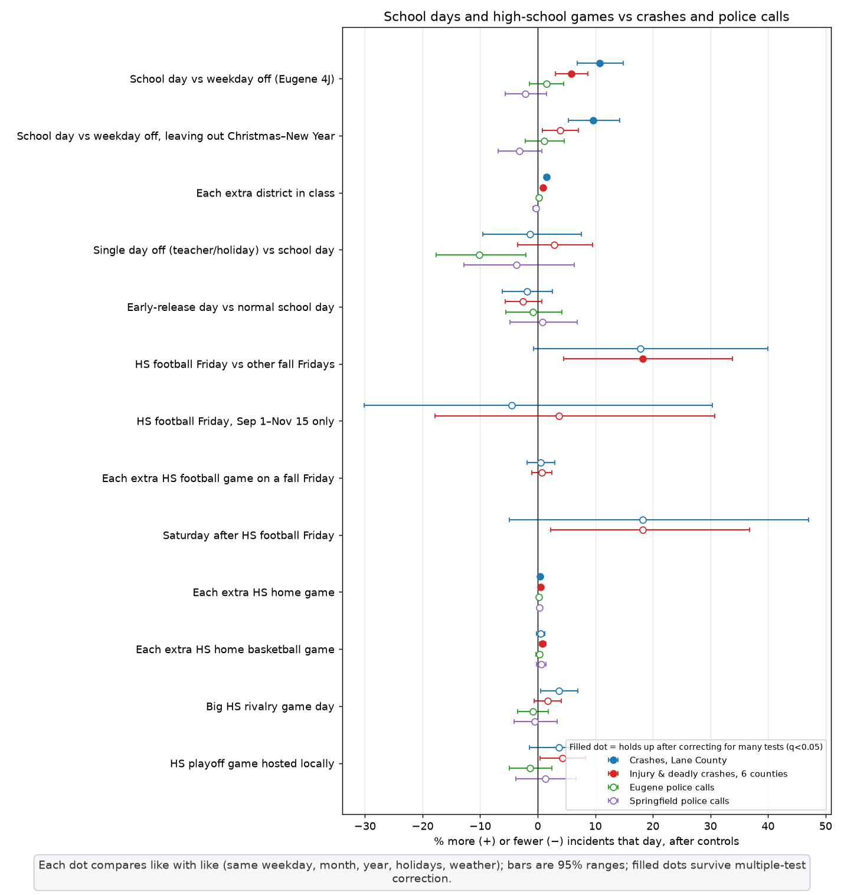
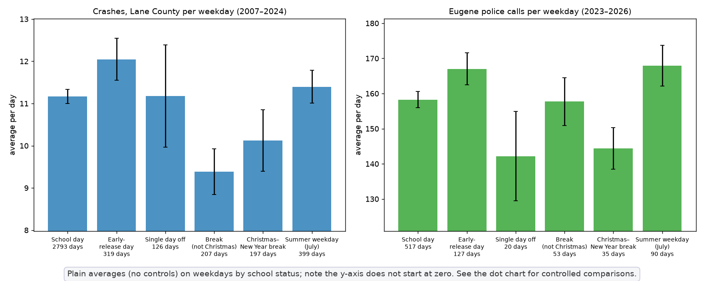
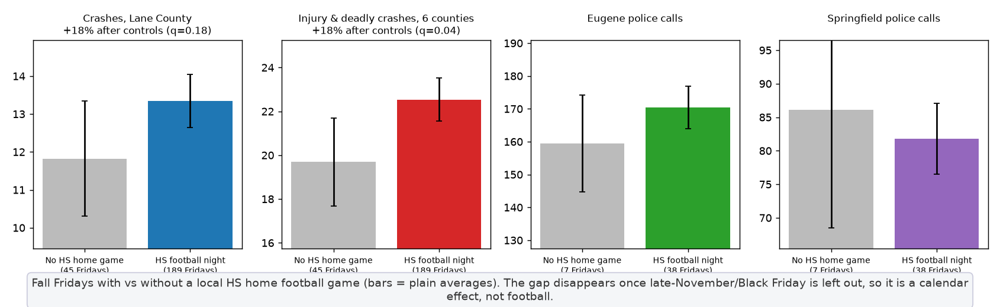

← Eugene dashboard · Ducks & Beavers games →
Updated Oct 28, 2026 08:44 AM PT. All dates are Pacific Time calendar days. 9 districts: Eugene 4J, Bethel, Springfield, Junction City, Monroe, Harrisburg, Creswell, Pleasant Hill, South Lane (Cottage Grove). 13 high schools.

Each dot compares like with like (same weekday, month, year, holidays, weather); filled dots survive multiple-test correction.

Plain averages on weekdays by school status (no controls; y-axis doesn't start at zero).

Fall Fridays with vs without a local HS home football game; the gap is a late-November calendar effect.
Real published district calendars (current district websites and older copies saved in the Internet Archive's Wayback Machine). Years with no calendar found use an estimated rule (Wed after Labor Day to mid-June, Thanksgiving Wed–Fri, Dec 21–Jan 3, late-March spring break, federal Monday holidays).
| District | School years with a real calendar |
|---|---|
| Eugene 4J | 2007-08 to 2026-27 |
| Bethel | 2013-14, 2016-17 to 2021-22, 2023-24, 2026-27 |
| Springfield | 2014-15 to 2016-17, 2019-20 to 2026-27 |
| Junction City | 2011-12 to 2013-14, 2016-17, 2018-19 |
| Monroe | 2017-18, 2019-20 to 2025-26 |
| Harrisburg | 2025-26 |
| Creswell | 2016-17 to 2018-19, 2020-21 |
| Pleasant Hill | 2013-14, 2015-16 to 2016-17, 2018-19 to 2026-27 |
| South Lane (Cottage Grove) | 2024-25 to 2025-26 |
High-school games: 18,635 varsity home games (2005-09-02 to 2027-05-21) from MaxPreps schedules — football, boys & girls basketball and soccer, volleyball, baseball, softball — at Sheldon, South Eugene, Churchill, North Eugene, Willamette, Thurston, Springfield, Junction City, Monroe, Harrisburg, Creswell, Pleasant Hill and Cottage Grove, plus locally held neutral-site tournament games. Early seasons (2005–07) are thinner.
Outcomes: ODOT crashes 2007–2024 (Lane County; injury & deadly crashes in Lane, Linn, Benton, Douglas, Marion, Lincoln) and Eugene/Springfield police calls (Jan 2023–Oct 2026). Quasi-Poisson regression on daily counts. School-day tests use only weekdays in Sep–Jun and control for weekday×month, year, US holidays and weather (rain, low/high temperature, air pressure). Football-Friday tests use only fall Fridays (controls: month, year, holiday, weather). Benjamini–Hochberg correction across all 44 tests ("holds up" = q < 0.05). Full results: school_correlations.csv. Data columns are in the main dataset (schools_in_session_count, school_4j_in_session, districts_out_count, early_release_any, hs_home_games, hs_football_friday, hs_rivalry_game, …).